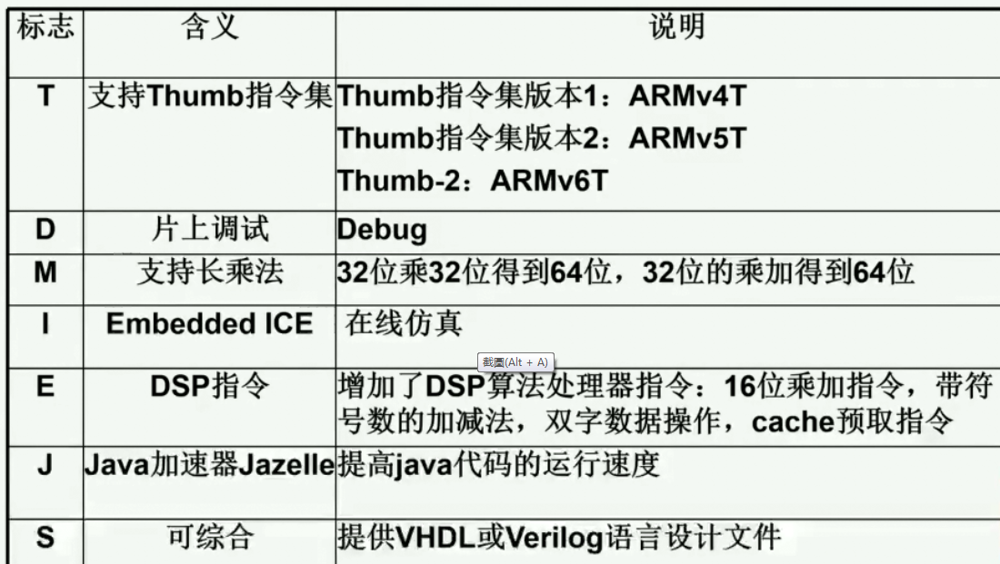
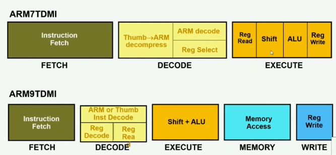
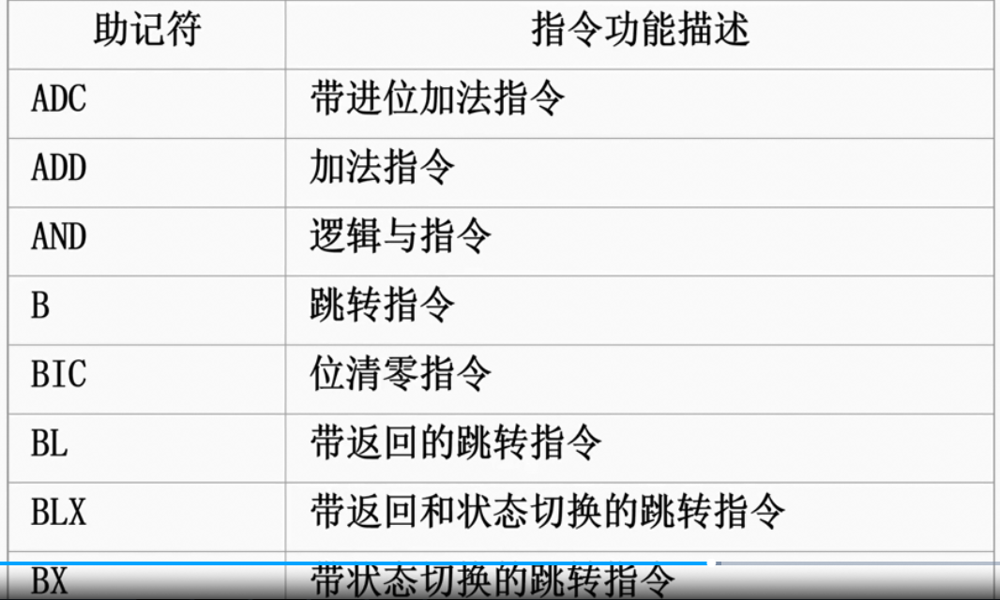
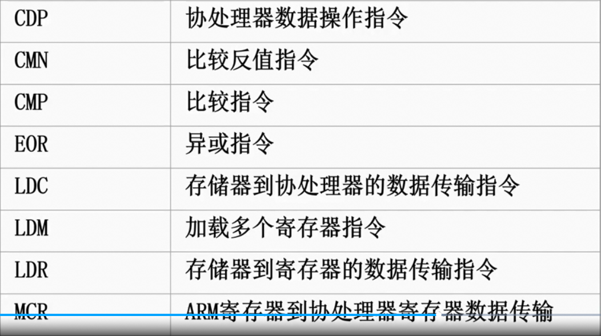
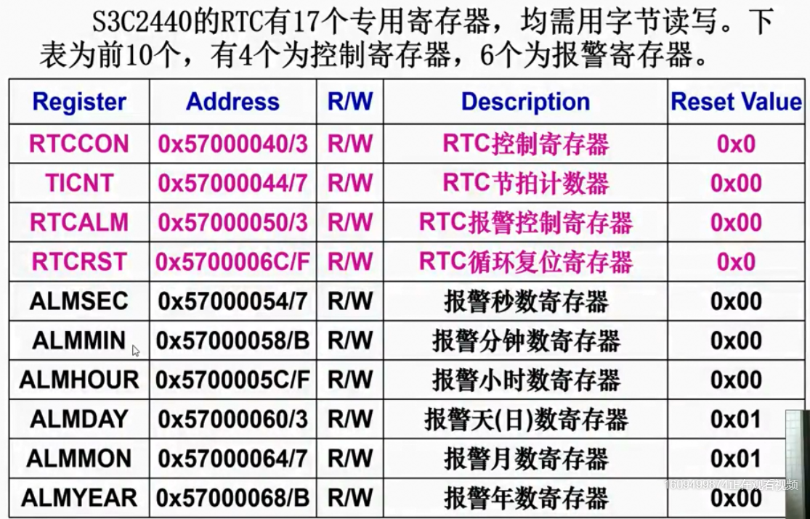
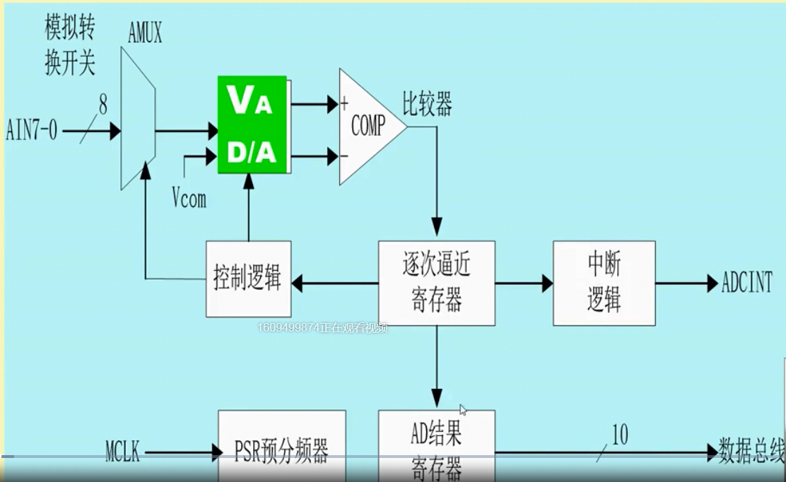
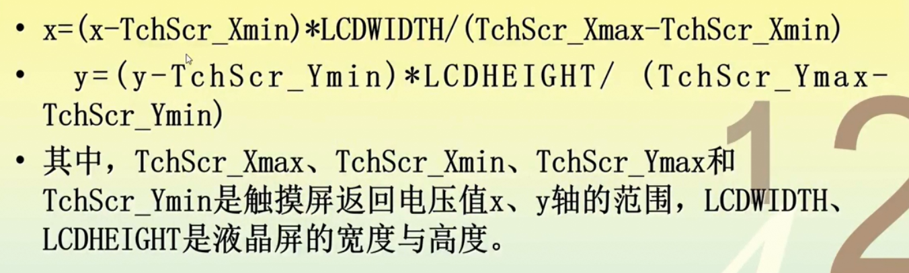

Embedded_System
2020-07-01
Chapter 1 嵌入式系统概况
嵌入式系统
定义
以应用为中心，以计算机技术为基础，软件，硬件可裁剪，功能、可靠性、成本、体积、功耗严格要求的专用计算机系统。
发展趋势
- 小型化
- 可靠性
- 稳定性
- 高速度
- 实时性
- 智能性
- 实用性
嵌入式处理器
- 嵌入式微控制器(MCU)：应用于单片机，工业控制。
- 嵌入式数字信号处理器(DSP)：应用于高等计算，信号处理，通信，军事……
- 嵌入式微处理器(MPU)：由CPU演变而来。
- 嵌入式片上系统(System ON Chip，SOC)：All in one (chip).应用于ZipBee网络。
存储体系和存储层次
- 体系结构
- 冯·诺依曼结构：指令与数据位于同一存储器，统一编址，不能同时访问指令与数据。
- 哈佛结构：指令与数据位于不同存储器，可以同时访问指令与数据。
- 存储层次
- 金字塔型
- Cache
- SDRAM(主存)
- Flash(内部存储):NOR型、NAND型
- 金字塔型
采用技术
- RISC(精简指令系统计算机)
- 流水线技术
- 总线和总线桥
嵌入式软件系统
概述(结构)
- 驱动层
- 操作系统层
- 中间件层
- 应用层
软件运行流程
- 上电复位
- 板级初始化
- 引导/升级系统
- 远程升级
- 本地升级
- 系统初始化
- 应用程序初始化
- 多任务应用
操作系统
- 实时(RTOS)：实时为首位，效率为其次
- 硬实时
- 软实时
- 非实时
RTOS
- 任务调度
- 抢占式
- 非抢占式
eg.
- μC/OS-II
- RT-Linux
- VxWorks
- Android
Chapter 2 微处理器
概述
ARM处理器
- 使用大量32位寄存器(EAX,EBX…)，采用RISC
- 具有很强的存储区保护功能
- 可扩展
- 小体积、低功耗、成本低、高性能
版本
- V1-V6
- Cortex-M：只支持Thump-2指令集(16位)
- Cortex-R(Realtime)：可支持16，32位指令集，侧重于实时系统
- Cortex-A(Application)：可支持16，32位指令集，侧重于复杂操作系统与应用
- V8：支持64位指令集
ARM指令集命名规则

Thump指令集
thumb指令集是arm指令集的一个子集，是针对代码密度问题而提出的，它具有16位的代码宽度。与等价的32位代码相比较，thumb指令集在保留32位代码优势的同时，大大的节省了系统的存储空间。thumb不是一个完整的体系结构，不能指望处理器只执行thumb指令集而不支持arm指令集。
ARM微处理器(MPU)
- ①ARM架构处理器
- 处理器内核：只保持最基本的组织架构
- 处理器核(内核+Cache+MMU(内存管理单元)+etc.)
- ②集成电路厂商的外围处理部件
- ①+②=MPU
部分ARM对比
- 7代：3级流水线
- 9代：5级流水线
- 11代：8级流水线

组成结构与工作原理(以ARM7为例)
- 32位ALU
- 30个32位通用寄存器
- 6个状态寄存器(1个记录当前状态，5个备用)
- 1个程序计数器PC
- 32位桶型移位寄存器
- 指令译码&控制逻辑
- 指令流水线
- 数据/地址寄存器
工作状态
- ARM状态(执行32位的字对齐的ARM指令)
- Thumb状态(执行16位的半字对齐的Thumb指令)
运行模式
- 用户模式(USR)
- 快速中断模式(FIQ)
- 外部中断模式(IRQ)
- 特权模式/管理员模式(SVE)
- 数据访问中止模式(ABT)
- 未定义指令中止模式(UND)
- 系统模式(SYS)
Chapter 3 嵌入式系统开发环境及技术
嵌入式软件系统的分类
- 运行在开发平台上的软件
- 运行在嵌入式系统上的软件
开发环境
包含
- 编辑程序
- 编译程序
- 汇编程序
- 链接程序
- 调试程序
- 工程管理
- 函数库
市面上的IDE
- IAR EWARM
开发工具
分类
- 需求分析工具
- 软件设计工具
- 编码调试工具
- 测试工具
- 配置管理工具
- 维护工具
开发工具举例
- ARM公司推出
- ADS/SDT
- RealView MDK
- Linux自带
- GNU
开发过程
- 生成
- 调试
- 固化
测试
- 测试方法
- 指令集仿真程序
- 硬件仿真器
- 直接下载至开发板
- 测试工具
- 内存分析工具
- 性能分析工具
- 覆盖分析工具
- 缺陷追踪工具
引导程序(BootLoader)
- 嵌入式的BIOS
- 通电后首先运行的一段代码
主要任务
- 硬件初始化
- 建立内存映射图
- 将操作系统和应用程序从FLASH加载到SDRAM
阶段1
- 使用汇编语言编写，不需要有太复杂的功能
- 硬件初始化
- 为阶段2准备RAM空间
阶段2
- 使用C编写，可实现较复杂的功能
- 初始化要用到的设备
- 检测系统内核映射
- 加载内核映象和根文件系统映像(FLASH –> SDRAM)
- 设置内核启动参数
- 跳转到内核映像入口并执行内核程序
- 系统软件设置，更新系统(system.bin)
Chapter 4 指令系统与程序设计
- 机器指令
- ARM指令(32b)
- Thump指令(16b,ARM指令的压缩)
- Jazelle
- 伪指令
- 宏指令
ARM指令及功能描述


- 后缀名：”xxx.s”
Chapter 5 嵌入式系统设计与应用
嵌入式系统设计的一般步骤
- 需求分析
- 分析用户需求
- 确定硬件软件
- 检查分析的结果
- 确定项目约束条件
- 概要设计
- 体系结构设计
- 软硬件设计
- 系统集成与测试
电源管理与时钟信号设计
电源管理
- 使用电源管理器
- 可以为每个模块提供相应的电源管理
- 可以使系统在重启，正常运行，空闲和挂起的电源状态下保存RAM中系统文件
- 与三种客户端程序打交道
- 相关的驱动程序
- 改变电源状态 或 改变设备性能 的应用程序
- 与电源改变有关的程序
时钟电路
时间管理
- 功能
- 维持日历时间
- 任务计时
- 软定时器的定时管理
- 维持时间片的轮转调度
- 时钟源
- 实时时钟
- 定时器/计数器
S3C2440定时器
- 组成
- 5个16位定时器，定时器组成：
- 减法计数器
- 初值寄存器
- 比较寄存器
- 观察寄存器
- 逻辑控制
- 2个8位预分频器，2个4位分频器
- 可编程PWM输出占空比
- 初值自动重装连续输出模式，单脉冲输出模式
- 死区生成器
- 5个16位定时器，定时器组成：

存储管理
- ARM结构的存储器最大寻址空间：4GB
- ARM的总线接口信号分类
- 时钟信号和时钟控制信号
- 地址类信号
- 存储器请求信号
- 数据时序信号
- 一般采用的接口电路
- SDRAM
- NAND Flash
系统接口电路
通用接口GPIO
- 工作过程
- I/O系统初始化
- 设备管理初始化
- 驱动逻辑初始化
- 硬件抽象初始化
- 设备打开
- 读/写/控制
- 设备关闭
- I/O系统初始化
- ARM采用I/O与存储器统一编址的方式
中断处理
- 中断响应，确定中断源
- 中断处理
- 中断返回
实例(S3C2440)
- 保存当前状态寄存器CPSR(Current Program Status Register)至SPSR(Saved Program Status Register)
- 进入特定模式，屏蔽中断
- 设置连接寄存器LR
- 设置程序计数器PC
- 处理中断
- 将保存在中断模式中的SPSR值赋给CPSR
- 将返回地址赋给PC
A/D转换
- 逐次逼近型转换

显示屏
LED
- 使用二极管
LCD
- 使用液晶
- 控制器结构
- 时序发生器
- LCD主控制器
- DMA
- 视频信号混合器
- 数据格式转换器
- 控制逻辑
触摸屏
- 电阻式
- 要求点击位置精确，按压力度较大
- 电容式
- 点击位置模糊，只需触碰
- 表面声波触摸屏
FM7843

串行通信
通用异步接收发送器 UART
- 作用
- 将并行转为串行
- 自动生成起、止位的帧数据格式
- 自动进行奇偶校验
标准总线
I²C (Inter IC,内部集成电路总线)
- 全双工通信
- 数据线上信号定义
- 空闲：时钟信号和数据信号都是高电平
- 起始信号：时钟信号高电平，数据信号下降沿
- 停止信号：时钟信号高电平，数据信号上升沿
SPI (通用外设接口)
- 传输时高位先传，低位后传
RS-232
- 缺点
- 信号电平值较高，易损坏接口
- 与TTL电平不兼容
- 单端驱动，单端接收，一条线路传输一种信号
- 传输速率低(19200bps)
- 传输距离有限(30m)
USB (通用串行总线)
- 半双工通信
- 特点
- 单极性、差分、不归零NRZI编码
- 即插即用
- 传输速率高
- 连接方便，易扩展
- 独立供电
- 信息传输方式
- 同步传输
- 中断传输
- 批量传输
- 控制传输
CAN总线 (Controller Area Network)
- 特点
- 抗干扰能力强
- 实时性好
- 系统错误检测
- 隔离能力强
- 信息传输方式
- 同步传输
无线通信技术
- 物理层
- 红外通道(IR)
- 射频通道(RF)
- 蓝牙
- Wi-Fi(无线保真技术)
- ZigBee
- GSM
- GPRS
- CDMA
蓝牙
- 特点
- 适用设备多
- 工作频段全球通用
- 使用方便(Plonk and Play)
- 安全加密，抗干扰能力强
Wi-Fi
- 特点
- 覆盖范围理论值为100m
- 传输速度快
- 应用方便
- 无需布线
GPRS (通用无线业务系统)
- 特点
- 始终在线且传输速率高
- 成本低
- 覆盖范围广
CDMA (码分多址)
- 特点
- 大容量通信
- 大范围通信
- 高质量
- 支持综合业务
- 支持软切换
ZipBee (3G-5G)
- 特点
- 声音和数据传输速度提升
- 全球范围内无线漫游
- 提供流媒体形式
GPS
- 组成
- 宇宙空间部分
- 地面监控部分
- 用户设备部分
Chapter 6 μC/OS-II 操作系统
- 特点
- 基于ROM运行
- 抢占式实时多任务内核
- 高度可移植
- 源代码开放
- 可固化
- 可裁剪
内核结构
- 应用软件层
- 核心代码层
- 系统设置与移植层
Chapter 7 嵌入式Linux
内核组成及其功能
- 进程调度
- 负责进程对CPU访问
- 基于优先级的进程调度
- 内存管理
- 硬件无关部分：提供进程的映射和逻辑内存的对换
- 硬件有关部分：为内存管理硬件提供了虚拟接口
- 虚拟文件系统
- 为文件和设备提供统一接口
- 网络接口(NET)
- 提供对各种网络标准的存取和网络硬件的支持
- 进程间通信(IPC)
- 管道和fifo
- 信号量
- 消息队列
- 共享内存
生成新系统文件命令8步
- cd/usr/src/linux 转到源代码目录
- make menuconfig 根据具体需要
- make dep 建立从属文件
- make clean 删除临时文件
- make lib_only 编译库文件
- make user_only 编译用户应用程序文件
- make jffs2 生成jffs2文件系统
- make image 生成新的文件系统(镜像)
JFFS2
- 日志结构化
- 读写操作比ext2好
- 提供了安全保护(可回滚)
- 提供了更好的闪存管理
Chapter 8 Android操作系统
- 特点
- 价格低性能高
- 应用程序发展迅速
- 手机厂家和运营商的鼎力支持
- 系统开源，易于创新